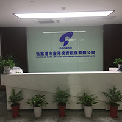

发布日期：2019-5-13
张家港市金港投资担保有限公司是由政府全额出资的一家国有资产公司，公司成立于2002年7月，主要目的是解决中小企业融资难问题，公司的宗旨是以服务为主，盈利为辅。
公司注册资金从成立之初的1500万元，经过多次增资扩股，目前已达6.5亿元，公司现有股东12名，全部为国有资本，其控股股东为张家港市财政局下属市直属资产经营公司，其余股东为张家港市各乡镇资产经营公司。公司现与12家银行签订了长期合作协议，最大合作银行为张家港农村商业银行。 公司成立至今，在市委、市政府的直接领导下，不断加大融资担保力度，除了为张家港市中小企业融资提供担保外，公司对再就业人员创业贷款，张家港市领军人才项目贷款，科技型企业融资贷款均提供相应担保服务。截止2017年末，累计为1815户企业（个人）担保贷款近280亿元。目前，担保户数388户，担保余额20.03亿元，公司2017年信用等级为AA-。 公司成立以来,已有几百家企业通过我公司担保后进入向银行正常融资的渠道，企业多增加了数万人的劳动就业，实现了政府、企业、银行三盈的目的。另外，我公司一直坚持了低收费的制度，直接让利于中小企业，一定程度降低了中小企业的融资成本。经过多年的努力，在有效控制风险的前提下极大地缓解了我市中小企业的融资难问题，取得了可观的社会效益。拼搏进取、开拓创新是我公司一贯的工作精神，公司以优质的服务赢得了张家港市中小企业和业界的好评，并连续三年被评为苏州市中小企业服务示范机构和苏州市民营经济工作先进集体。随着张家港市经济的不断发展，中小企业融资需求的不断扩大，公司将在市委、市政府的领导下，不断加强服务意识，提高服务水平，尽最大可能为中小企业融资服务，以取得张家港市经济的更快发展。